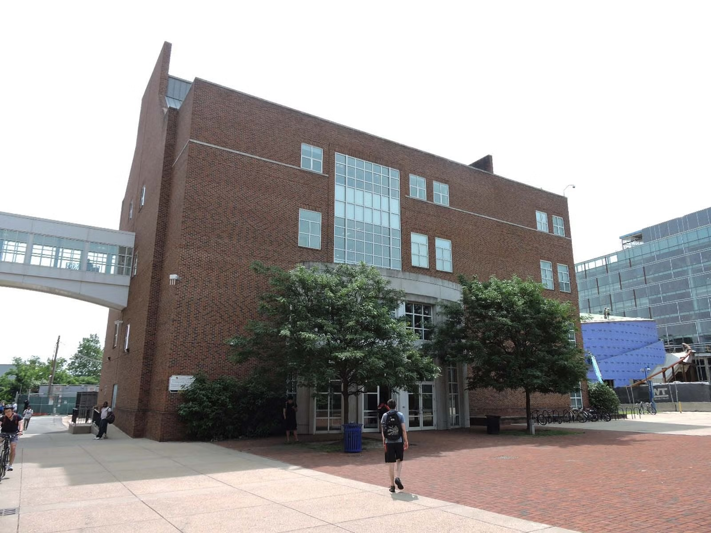
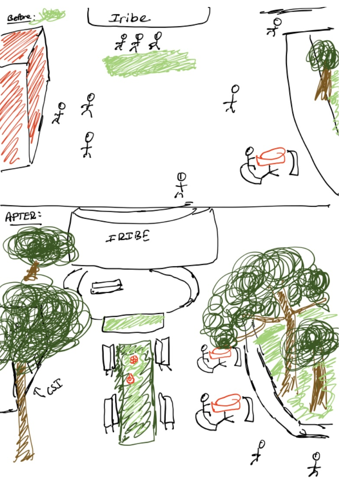
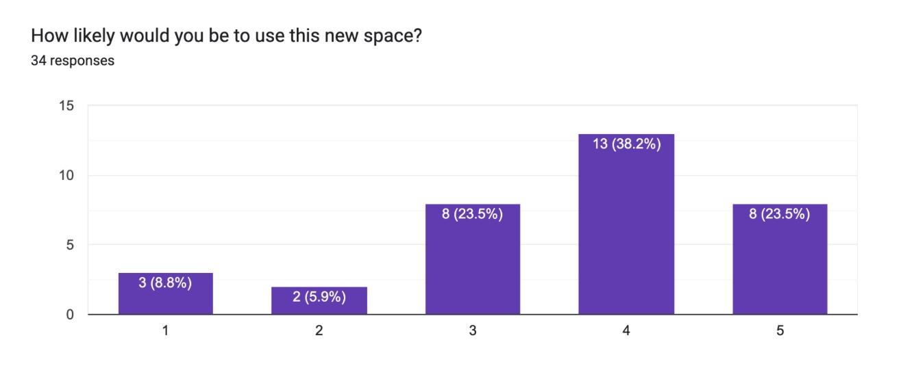
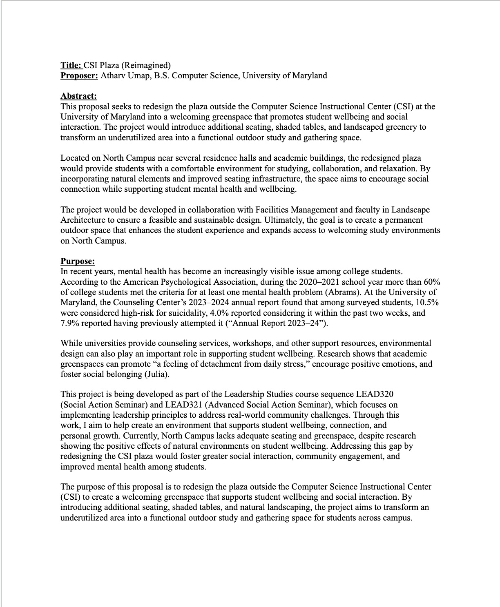
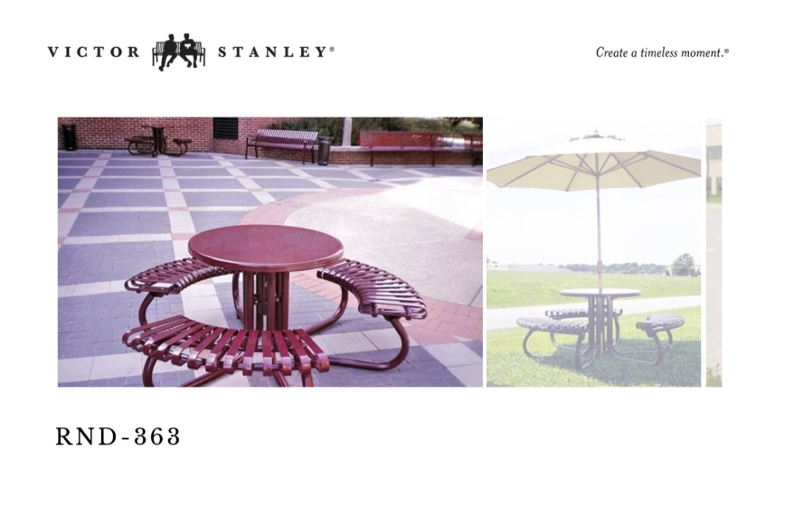

Implementation
The Action Plan
One semester. One corner of the campus. A loose plan, a willing team, and a steady accumulation of small wins.
Where it starts
The plaza, and what I imagined.
A photograph from the construction of Iribe on the left, where the seating outside CSI shown is the same arrangement that remains in place today, paired with my initial sketch of what the space could become.


Semester Timeline
From idea to ground.
Weeks -6 to -4 · Project Generation
Choosing the project.
I weighed three possible directions: a mental health and greenspace initiative, a UMD International Fair, and a UMD Opportunity Network. I landed on the mental health and greenspace project as the one I could most credibly move on inside a semester, and the one that sat closest to a problem I had felt firsthand on campus.
Weeks -4 to -2 · Connections
Finding the right people.
I worked through the Campus Connections and Social Change Connections frames to identify who, inside and outside UMD, could move this project forward. That meant naming roles before names: facilities and grounds staff, mental health leaders, student peers, faculty advisors, and design practitioners beyond the university.
Weeks -2 to 0 · First Conversations
Talking to key actors.
The most consequential first meeting was with Ms. Karen Petroff, Director of Landscape and Special Services. Her input pointed me toward the four practical questions any campus greenspace has to answer: the irrigation system, funding, designing the space, and maintaining the space over time.
Weeks 1–2 · Foundation
Building a working guide.
I created a detailed social action guide to track the project end to end: key contacts, the considerations attached to each phase, and a checklist of everything I needed to accomplish. It became the working document I returned to every time the project got too big to hold in my head.
Weeks 3–4 · Outreach
Contacting connections for each phase.
I reached out to two people whose roles spoke to different parts of what I was trying to build. Dr. David Myers, Associate Professor in the Department of Plant Science and Landscape Architecture, was referred by Ms. Petroff with the hope of working with a studio group to design the space. Dr. Warren Kelley, Senior Associate Vice President for Well-Being, was the contact for gauging the project's feasibility on the mental health side and for understanding how funding currently moves through the university.
Weeks 5–6 · Recalibration
An impasse, and a way around it.
After my conversation with Dr. Myers, the project hit a wall. There was no path to bringing a studio group on this semester, and designing the space myself, without architectural training, was not realistic. I split the work into a short term and a long term plan: short term, add tables and seating to the plaza; long term, secure funding and submit a proposal that Dr. Myers could evaluate and pass to a studio group in the fall. In parallel, Dr. Kelley pointed me toward the Student Facilities Fund as a likely funding route, with the note that the proposal would carry more weight if I could show student demand on campus.
Weeks 7–8 · Demand & Funding
Proving the need.
I circulated a form across the Computer Science department to gauge whether new seating in the plaza would actually be used and what kind of furniture students wanted to see. I received 34 responses, with a clear majority saying they would use the space. With those responses, a price estimate, and the short term plan, I submitted an application to the Student Facilities Fund.


Weeks 9–10 · Approvals
Through the institution.
A campus planner with UMD FM Facilities Planning, who also sits as a non-voting member of the Facilities Student Advisory Subcommittee (FSAS), responded with the next steps: gather formal letters of support, then meet with a senior campus planner about project approval. I drafted and secured a letter of support from the Leadership Studies department, reached out for formal support from a studio group, and contacted the senior campus planner about the path to the Architectural and Landscape Review Board (ALRB).
Weeks 11–12 · Pitfalls
What I couldn't unlock yet.
The studio group's formal support is gated on having ALRB approval first. I was told to come back in July with that approval in hand for the project to be taken up by a studio group next semester. In the meantime, I built out the slide deck the ALRB requires with the full project detail, and I'm waiting on a Victor Stanley representative to come back on my questions about the tables I selected.

Weeks 13–14 · Where it stands
Holding the position.
Still waiting on the table prices. The FSAS has formally postponed my application to next semester to allow time for the ALRB approval and the final pricing detail to come in. The project sits on a clear next move rather than a stall, which is the position I want to hand off from.
What I'm Taking With Me
Insights from the work.
-
01.
Roles before names.
Mapping who needed to be involved by role first, facilities, well-being, design, mentorship, made the outreach disciplined instead of opportunistic. By the time I started writing emails, I knew which conversations would unlock which parts of the project. The Campus Connections and Social Change Connections frame did the heavy lifting before I sent a single email.
-
02.
Plan with two horizons.
When the studio group fell through in week five, splitting the project into a short term plan (add seating now) and a long term plan (hand a complete proposal to a studio group in the fall) was what kept it alive. A single timeline would have died at the impasse; a two-horizon plan turned the same setback into momentum on both ends.
-
03.
Hand off the position, not the project.
The semester ended with the project postponed, but on a clear next move rather than a stall. That is a different kind of "complete" than finishing the build, and it is what makes the project sustainable past me. The social action guide, the proposal, and this website are the position I am handing off.